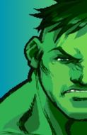

Select your Hero
- 
Ryu
Ryu é o protagonista principal da série Street Fighter da Capcom. Ele é um artista marcial disciplinado, dedicando seu tempo ao treinamento para se tornar o mais forte que pode. Ryu apareceu em todos os jogos da série desde X-Men vs. Street Fighter. Ele também é um dos quatro mascotes do universo da Capcom.